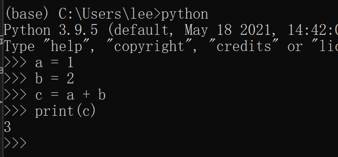

这本书添加了注释功能，左键选择任何文字，就会弹出注释菜单。注释功能区在页面的右上角。
注释有公共和私人两类。私人注释只有自己能看见，公共则所有人都能看见。
2 Python程序的执行
2.1 一个Python程序是什么
我们所谓“写一个Python”程序，到底是在写一个什么东西？
一般情况下，所谓一个Python程序，仅仅是一个你电脑里的纯文本文件，但扩展名是*.py，这个文件本质上一个.txt文件没什么不同，都可以用任何文本编辑器（例如你电脑里的“记事本”）打开和编辑。
我们要做的工作，就是用一个文本编辑器（当然也可以是一个集成编程环境如后面会用到的Spyder），编辑一个.py文件，然后把你要的代码写进去，用不同的方法去执行这个文件里代码。可能是在系统里一次性执行整个文件里所有代码，也可能是在一个交互环境里一步一步地执行。
2.1.1 基础知识：扩展名和文件类型
用于表示某个文件是什么类型，一般我们会看文件名的最后一个英文.以及之后的内容。
注意：这里只是泛泛而论。扩展名也是可以修改的，所以未必和实际的文件类型一致。
- 一个文件，其名为
WINWORD.EXE，其扩展名为.exe（Window系统的文件名不区分大小写，但Mac系统的文件名严格区分大小写），则意味着这是一个“Windows系统的可执行文件”。这实际上是微软Windows版本office中的Word的主程序。我们（在windows下）常说的“运行一个程序”，就是执行一个exe文件。 - 一个文件，其名为
鲁迅全集.txt，其扩展名为.txt，则意味着这是一个“纯文本文件”，其中的所有内容都可以视为文字，可以用任何一个文本编辑器，例如记事本，或者Word打开。 - 其他扩展名，如
.jpg是常见的图形文件，.docx是2007版本以后的Word文档，等等等等。
2.2 Python的交互式环境
我们先采用最基本的Python的交互式环境，给大家一点运行程序的感觉。
- 启动Anaconda Prompt。（用Mac的同学，启动终端terminal）
- 我们会看到命令行窗口

- 输入
python <回车>，我们可以进入python的交互式运行环境。
注意：
其中的命令提示符>>>。三个右侧尖括号，表示我们正处于python的交互式环境中，此时我们可以执行python的语句。
同时可见Python的版本为3.9.5，一般3.7.x以上皆可。

2.2.1 简单的编程：计算1 + 2
- 我们依次输入（每行代码以<回车>结束）
>>> a = 1
>>> b = 2
>>> c = a + b
>>> print(c)显然，1+2必然得到
3- 结果大致如图

注意：
- 无法得到结果
3，首先检查有没有输入错误（打错字）。 print(c)中的小括号，是英文括号。在语法层面上的所有符号，都是英文符号。- 如果输入的代码有误，已经敲了回车，只要把正确代码的再输入一次即可。
2.2.2 上述程序中涉及的一些概念
这个涉及程序设计的几个基本概念：
- 变量和赋值
变量，顾名思义，一个可变的量。编程中变量的概念和代数中的x, y, z基本一样。
Python中，对变量赋值使用1个等号 “=”。
显然， 我们有3个变量，a, b和c。我们把1赋予a，2赋予b，把a + b的值赋予c。
- 运算符
加减乘除，以及逻辑运算如是否等于，大于，小于等，我们以后会用到。这里只用到“加法”
- 函数
和数学函数一样，我们调用一个函数，给这个函数传递一个参数，然后这个函数会根据这个参数做一些事情。可能是为你进行一个计算，可能修改某个变量等等，也可能什么都不做。
这里我们调用的函数是print()，这个函数的用途是把你传递给他的变量c的值打印出来。函数的调用方法是函数名与小括号。
数据分析的程序，大部分情况下可以视为由变量和函数组成。
2.2.3 退出运行环境
输入exit()，然后回车即可。
可见，exit本身也是一个函数（函数名+小括号），其调用这个函数的作用是退出Python交互式运行环境。
注意：一定要退出，以便后续的程序能执行。
此时，我们又回到了一开始的命令行（终端）环境中
可见，命令提示符现在是一个>，这提示我们正处于系统的命令行环境中
- 可以执行系统中的命令，但不能执行python中的语句！
- 要进行交互式的python编程，要首先进入Python的交互式环境中！
2.3 预备知识：路径
2.3.1 路径Path
你的文件或者文件夹（目录），到底保存到了哪里？
所谓路径(path)，到达某个文件或者文件夹（目录）的层级结构，每一层用一个斜杠“/”分割。
在命令行（终端）环境下，在命令提示符>之前，一般会有提示你当前路径，即当前你处于哪个目录下。
例如 C:\Users\lee，指的就是，在你的C盘下，Users目录下，的lee目录。
注意：在你的电脑上，这里的lee会替换为你的用户名
这样，你输入的任何命令，都会对“当前路径”生效。
同样，路径既可以指向一个目录（文件夹），也可以指向一个文件。
如C:\Users\lee\add.py，就指的是，在你的C盘下的Users目录下的lee目录下的一个叫add.py的文件。
2.3.2 相对路径和绝对路径
- 绝对路径：从根目录（windows下即一个盘符，如c盘或者d盘）开始的路径，可以确定无疑地指向某个文件或者目录。如
C:\Users\lee\add.py。 - 相对路径：不从根目录起始的路径。其指向的目的地，从你的“当前路径”开始，往下数。
假如，你的当前路径是C:\Users，那么此时，相对路径lee\add.py，所指向的，就是当前路径下（C:\Users），lee目录下的add.py。这也等价于绝对路径C:\Users\lee\add.py。
- 两者的区别：绝对路径从根目录开始，相对路径从“当前路径”开始。
2.3.3 进入某个目录
Windows命令行，和Mac的终端，有相同的命令cd <路径>，可以进入一个目录。
如，在终端中输入（并回车）注意这里使用的是绝对路径
cd C:/Users 则会让终端进入到 C:/Users 目录下。见提示符>前方的“当前路径”已经改变为C:/Users。你现在已经位于C:/Users 目录。

尝试相对路径，在终端中输入（并回车），注意这里的lee，请替换成你的用户名。
cd lee则会让终端进入到 C:/Users/lee 目录下。见提示符>前方的“当前路径”已经改变为C:/Users/lee。你现在已经位于C:/Users/lee 目录。
其他用法包括：
- 进入上一级目录
cd ..- 进入根目录
cd /可以让你在命令行和终端中，定位到你想要的目录和文件。
2.3.4 用Windows图形界面获得路径
在你的windows资源管理器（俗称“我的电脑”），在任何一个文件夹中，点击地址栏

你就可以得到这个文件夹的路径，可以粘贴到命令行中。
特别注意：正反斜杠问题
在编程的语境下，反斜杠“\”有特殊用途。因此，表示路径的时候，我们统一用（正）斜杠“/”，而不用反斜杠“\”。
统一的写法，如C:/Users/lee
2.3.5 列目录
列目录的命令，Windows的命令行中为dir，Mac中为ls。同学们可以执行尝试。
2.4 用Python解释器来运行
当你离开交互环境，你的程序就没了。当然，我们不可能每次都把程序从头写一次。如前文所述，我们编写一个.py文件来保存我们的代码，然后利用系统中安装的Python解释器来执行它。
2.4.1 编写源代码
前面说过，python的代码文件.py是一个和.txt同样的纯文本文件，所以我们这次直接用记事本来编辑。
打开windows的记事本，把刚才的1 + 2程序写进去，按ctrl+s保存
a = 1
b = 2
c = a + b
print(c)- 在
C盘根目录下，建立一个新的文件夹，例如“PythonClass”。 - 类型选择.（所有文件），文件名可以任意起，但是必须以
.py结尾。例如我这里采用add.py。 - 保存。
注意：
- 如果你按此操作，那么你的
PythonClass文件夹的完整路径（绝对路径）就是C:/PythonClass。而你的.py文件的完整路径，就是C:/PythonClass/add.py - 如果你自行选取其他位置保存
.py文件，那么路径也可以如此类推。如果实在找不到，则可见在Windows图形界面获得路径。
2.4.2 执行这个代码
确保你刚才已经退出了Python的交互环境。我们现在首先要定位到我们保存.py文件的目录，如果大家按操作运行，这个文件应该在C:/PythonClass目录下。
我们cd命令，转移到我们保存py文件的路径：
输入 (并回车)
cd C:/PythonClass
此时你的命令提示符应该告诉你，现在位于C:/PythonClass目录下。
C:\PythonClass>_输入（并回车）
python add.py
这句命令的含义是：让系统中装好的python解释器，去运行add.py这个python脚本文件。这个脚本文件就在当前目录中（或者环境变量path中的目录，现在可以忽略这一点）。
实际上，我们以用绝对路径来指向add.py，也是一样的。
python C:/PythonClass/add.py
如果一切顺利，你将会看到结果
3而不同之处在于，我们的程序这次保留了下来，我们要继续上一次编程，我们只要打开这个py文件，继续往里写代码即可。
那如果我们既要保存代码，又要一边执行代码、一边看结果怎么办？